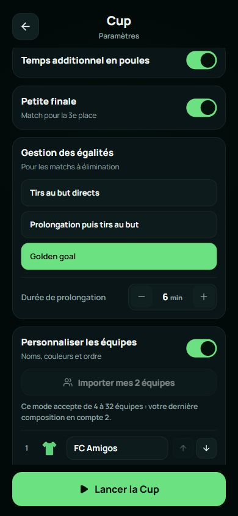
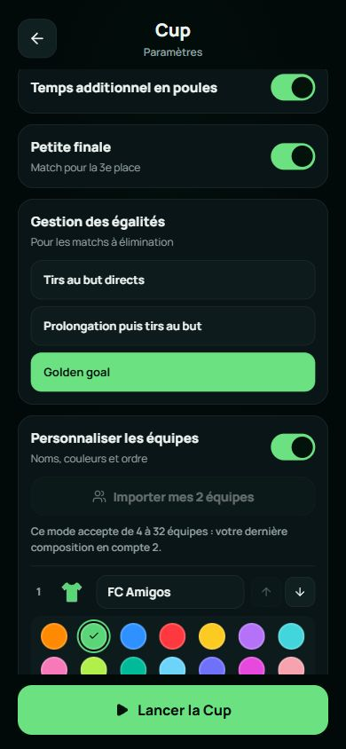
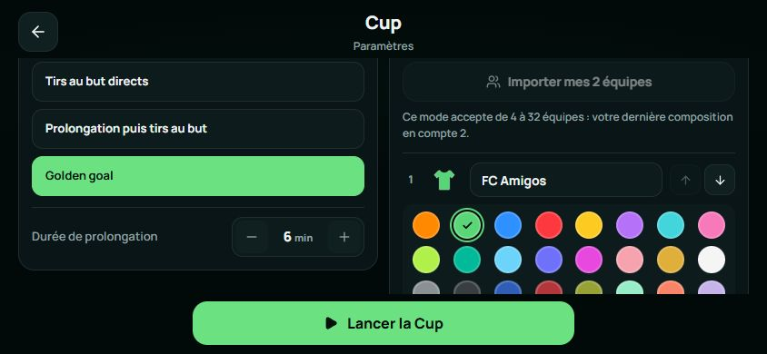
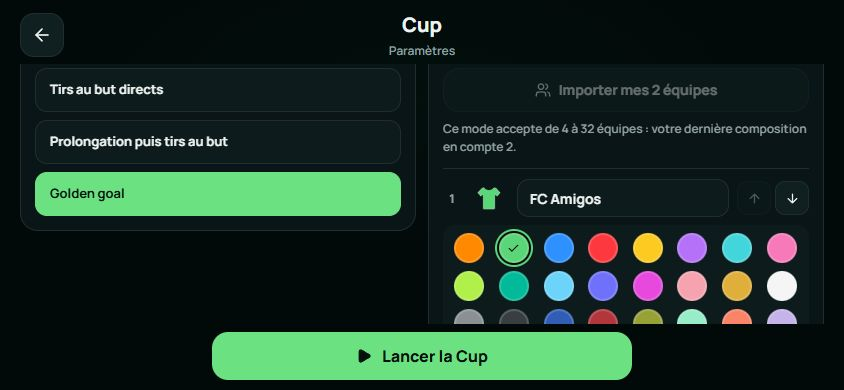

Portrait · 390 × 844
Durée sans effet masquée en Golden goal, choix explicite du propriétaire.
Lovable · référence figée
Expo · Phase 2B
Valeurs de champs identiques. Décalage de 66 px lié au champ retiré. Ce relevé ne mesure pas l’identité des pixels ni le rendu sur téléphone.
Paysage · 844 × 390
Durée sans effet masquée en Golden goal, choix explicite du propriétaire.
Lovable · référence figée
Expo · Phase 2B
Valeurs de champs identiques. Décalage de 66 px lié au champ retiré. Ce relevé ne mesure pas l’identité des pixels ni le rendu sur téléphone.